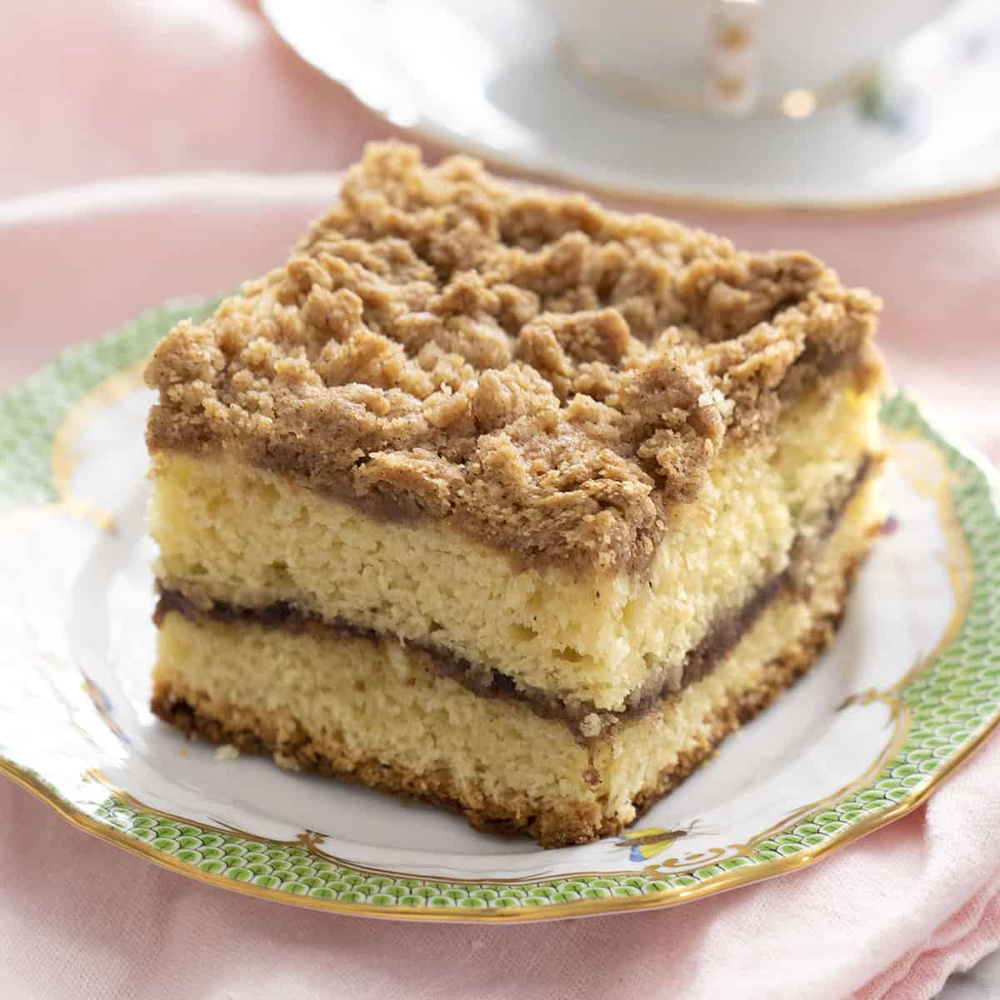

Apple Crumble Coffee Cake

Description
Sweet cake inteded to be eaten with coffee or tea. Typically a circular cake baked with two layers
seperated by coffee butter icing
Ingredients
Dry Ingredients:
- 2 teaspoons unsalted butter
- 2 cups all-purpose flour
- 1/2 teaspoon fine sea salt
- 1 teaspoon baking powder
- 3/4
Crumble Mixture:
- 11/2 cups finely choppsed walnuts
- 1/3 cup packed light brown sugar
- 1/3 cup white sugar
- 1/4 teaspoon salt
- 1 teaspoon ground cinnamon
- 3 tablespoons unsalted butter, melted
Wet Ingredients:
- 1/2 cup unsalted butter, at room temperature
- 1 cup white sugar
- 2 large eggs
- 11/2 teaspoons vanilla extract
- 1 cup plain yogurt
- 2 each Honeycrisp apples
Steps
- Preheat oven to 350 degrees F (175 degrees C). Butter a 9x12-inch baking dish generously.
- Whisk flour, sea salt, baking powder, and baking soda together in a bowl. Set aside.
- Combine walnuts, brown sugar, white sugar, salt, cinnamon, and melted butter in a bowl.
Mix until walnuts and sugar are thoroughly coated with butter.
- Cream butter and sugar together in another bowl with a spatula until well blended.
Add 1 egg and whisk until mixture is smooth, 2 to 3 minutes.
Whisk in second egg until thoroughly incorporated. Add vanilla extract and yogurt; whisk together.
Add flour mixture to wet ingredients; whisk just until flour disappears. Do not overmix.
- Remove cores from apples. Cut across into 1/8 -to 11/4 -inch slices.
Stack up a few slices, make 1 cut down the center, and dice across into cubes.
Add to cake batter, folding in with a spatula until just combined.
- Spread 1/2 of the batter evenly into the bottom of the prepared baking dish.
Scatter 1/2 of the crumble mixture evenly over the top.
Top with the rest of the batter in dollops. Spread carefully to evenly distribute, trying not to disturb the crumbs.
Top with the rest of the crumb mixture. Press crumbs into the batter very gently.
- Bake in the center of the preheated oven until a toothpick or bamboo skewer inserted into the center comes out clean,
about 40 minutes. Let cool to room temperature, about 30 minutes, before slicing and serving.